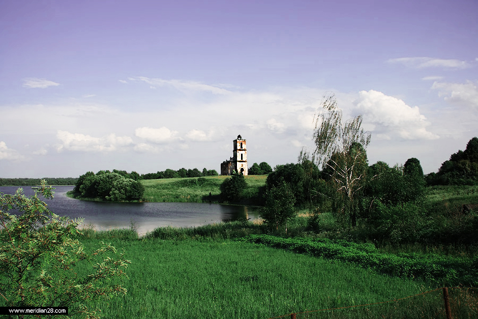

А с Беларусью Героя Советского Союза Евгения Филипповича Ивановского связывает деревенька Черея Чашникского района Витебской области.

Окрестности Череи
… Дом в Черее по улице Могилевской, 6 был построен в конце XIX века и принадлежал деду генерала – Артему Ивановскому. Вместе с женой они воспитывали четверых сыновей – Михаила, Филиппа, Павла, Федора и дочь Татьяну. Дед служил на почте. Счастье большой семьи разрушила смерть, Однажды Артема, который вез почтовый груз и деньги, убили в дороге. Заботы о детях легли на плечи бедной вдовы. Годы были не из легких, дети рано повзрослели и стали задумываться о том, как самим добывать хлеб насущный. Старший Михаил первым покинул отчий дом и оказался за океаном, в богатой Америке. Он надеялся помочь семье, но времена изменились. Незадолго до войны смог побывать в Черее под видом туриста. Братья провожали старшего до самой польской границы, и больше встретиться им не довелось. Трое младших и сестра Татьяна вместе с матерью долго жили на Могилевской. Сюда дети приведут суженых, здесь каждый начнет самостоятельную семейную жизнь. О том далеком времени напоминает старинный шкаф, до сих пор скромно ютящийся в прихожей, и портрет на стене. Генерал очень любил это фото – здесь ему 6 лет, здесь он в первом ряду вместе с отцом Филиппом Артемовичем и матерью Ольгой Яковлевной
На фото семья и сам Ивановский
Из воспоминаний Евгения Филипповича: «Наша семья Ивановских – с Витебщины. Крестьяне. Родился я в 1918 году в деревне Черея, недалеко от поселка Чашники, впоследствии районного центра. Был единственным сыном у родителей – ни братьев, ни сестер. Такая малочисленная семья в сельской местности – редкость. Отец, Филипп Артемьевич Ивановский, окончил некогда церковноприходскую школу, знал грамоту и во время первой мировой войны служил в команде писарей, - возможно, поэтому и жив остался. Мать, Ольга Яковлевна, всегда, сколько помню, занималась домашним хозяйством. Годы молодости родителей и моего детства были тяжкими, голодными, как и у многих в тогдашней белорусской деревне».
[Ивановский, Е.Ф. Атаку начинали танкисты: 8-й гвард.танк.корпус (Военные мемуары). – М.: Воениздат, 1984. – с.4-5]
Белая церковь
В 25-м Филипп Ивановский покидает Черею, увозя с собой сына, будущего генерала. Их местом жительства станет станция Красный Лиман в Донецкой области. Глава семейства устроится работать на железную дорогу, а сын закончит школу-десятилетку. Татьяна с мужем уехала в Ялту. В доме, который был разделен на две половины, остались семьи братьев Павла и Федора. В нем они и встретили военное лихолетье.
Много испытаний выпало на их судьбы, как и на судьбу всего народа, пережившего Великую Отечественную войну. В послевоенное время на Могилевской жил Павел со своей семьей. От него права на дом перешли к сыну Владимиру, который привел сюда молодую жену. Сегодня пенсионерка Зоя Михайловна отлично помнит всех родственников мужа, выживших в грозные сороковые или появившихся на свет после Победы, ибо свое родовое гнездо Ивановские не забывали. Самые теплые воспоминания – о Евгении Филипповиче – человеке удивительной судьбы. В 24 года он стал подполковником, в 26 – полковником, а в 54 года – генералом армии. В это время это был один из самых молодых военных начальников в армии Союза с этим званием.
Много испытаний выпало на их судьбы, как и на судьбу всего народа, пережившего Великую Отечественную войну. В послевоенное время на Могилевской жил Павел со своей семьей. От него права на дом перешли к сыну Владимиру, который привел сюда молодую жену. Сегодня пенсионерка Зоя Михайловна отлично помнит всех родственников мужа, выживших в грозные сороковые или появившихся на свет после Победы, ибо свое родовое гнездо Ивановские не забывали. Самые теплые воспоминания – о Евгении Филипповиче – человеке удивительной судьбы. В 24 года он стал подполковником, в 26 – полковником, а в 54 года – генералом армии. В это время это был один из самых молодых военных начальников в армии Союза с этим званием.
Расположение деревни на карте
Казалось бы, сколько поводов, чтобы возгордиться и, сославшись на занятость, забыть о деревенских родственниках. А он напротив, как только удавалось, приезжал в родное село. «Женька очень простой был, совсем не похож на генерала, - рассказывает свояченица. - Бывало, приедет, ходит по всем комнатам и вспоминает: вот здесь я спал, здесь ел, играл. Говорил: если лечу над Череей на вертолете, всегда снижаюсь так, чтобы увидеть крышу отеческого дома. А как радовался, когда мы яблоки ему передавали из нашего сада! Ох, и любил он Черею…»
Дом, в котором жил Е.Ф. Ивановский
Если бы немцы в 41-м знали, где родился командир танкового батальона, явивший чудеса храбрости со своими танкистами под Можайском, от дома не оставили даже следа. К счастью, это им было неведомо. Однако колыбели генерала в те годы все-таки досталось. Вот что рассказала двоюродная сестра Е.Ф.Ивановского Лариса Павловна Ивановская, которая сейчас живет в Добруше:
- Когда пришли немцы, мы жили в доме с семьей дяди Федора. Детей у него не было. Как только появился гарнизон, вместе с женой дядя ушел в партизаны. Папа хотел с нами тоже уйти. Но трое детей… Не взяли. А жить в Черее было опасно – нас стали преследовать полицаи. Так и скитались по разным деревням, по родственникам. Однажды мне очень захотелось домой. Я пришла в Черею, вместе с подружкой отправились на Могилевскую, зашли в дом. Оказывается, за нами следили. Едва переступили порог, началась стрельба, в старом шкафу и сейчас след от пули. Стреляли в окна. Мы легли на пол. Через несколько минут ворвались полицаи. Меня забрали и повели за село расстреливать. Спасла женщина, которая увидела конвой и бросилась полицаям в ноги. Ей удалось уговорить палачей.
- Когда пришли немцы, мы жили в доме с семьей дяди Федора. Детей у него не было. Как только появился гарнизон, вместе с женой дядя ушел в партизаны. Папа хотел с нами тоже уйти. Но трое детей… Не взяли. А жить в Черее было опасно – нас стали преследовать полицаи. Так и скитались по разным деревням, по родственникам. Однажды мне очень захотелось домой. Я пришла в Черею, вместе с подружкой отправились на Могилевскую, зашли в дом. Оказывается, за нами следили. Едва переступили порог, началась стрельба, в старом шкафу и сейчас след от пули. Стреляли в окна. Мы легли на пол. Через несколько минут ворвались полицаи. Меня забрали и повели за село расстреливать. Спасла женщина, которая увидела конвой и бросилась полицаям в ноги. Ей удалось уговорить палачей.
[Торбиня, И. В Черее мечтают про улицу Ивановского // Чырвоны прамень (Чашнiкi) – 2010. – 04.05. с.3]В дом на Могилевской снова вернутся, когда Черея станет партизанской зоной. Правда, не все. Жена Федора погибнет в отряде.

Черейское озеро
Черейское озеро
А для молодого офицера Евгения Ивановского война началась за сотни километров от родины. В разных местах довелось служить ему и после войны, где в то время он занимал должности заместителя командующего бронетанковыми и механизированными войсками по самоходной артиллерии, начальника штаба, командира танковой дивизии. Снова в Беларусь Евгений Филиппович вернется в 1980-м, послужив на Дальнем Востоке и в Германии. Пять лет был командующим Белорусского военного округа, затем главнокомандующим Сухопутными войсками СССР.
«В одной из поездок выпала возможность заглянуть на часок в родные края, где давно-давно не бывал, кажется с самого детства, - вспоминает Евгений Ивановский. – Село Черея, Чашниковского района, Витебской области. Старая рубленая хата, та самая. Здесь я родился и вот завернул сюда, чтобы поклониться отчему дому, постоять у порога, с которого когда-то сделал первые шаги. О чем думалось? Далеким-далеким эхом звучали голоса отца и матери, здешних селян. Наяву слышалась спокойная, деловая речь нынешних обитателей села, в том числе и младшего поколения Ивановских, моих племянников, раздавался шум автомашин и механизмов, обычный такой в современной деревенской жизни. Раздумья мои… Не сказать, чтобы они вились роем только у отчего дома, где я стоял. Больше мыслей было о том, как родная Беларусь вышла из таких вот хат…»
«В одной из поездок выпала возможность заглянуть на часок в родные края, где давно-давно не бывал, кажется с самого детства, - вспоминает Евгений Ивановский. – Село Черея, Чашниковского района, Витебской области. Старая рубленая хата, та самая. Здесь я родился и вот завернул сюда, чтобы поклониться отчему дому, постоять у порога, с которого когда-то сделал первые шаги. О чем думалось? Далеким-далеким эхом звучали голоса отца и матери, здешних селян. Наяву слышалась спокойная, деловая речь нынешних обитателей села, в том числе и младшего поколения Ивановских, моих племянников, раздавался шум автомашин и механизмов, обычный такой в современной деревенской жизни. Раздумья мои… Не сказать, чтобы они вились роем только у отчего дома, где я стоял. Больше мыслей было о том, как родная Беларусь вышла из таких вот хат…»
[Ивановский, Е.Ф. Атаку начинали танкисты: 8-й гвард.танк.корпус (Военные мемуары). – М.: Воениздат, 1984. – с.250]А знаете, о чем мечтают жители Череи? «Даст Бог, доживем до того времени, когда у нас или в Чашниках появится улица Ивановского…»